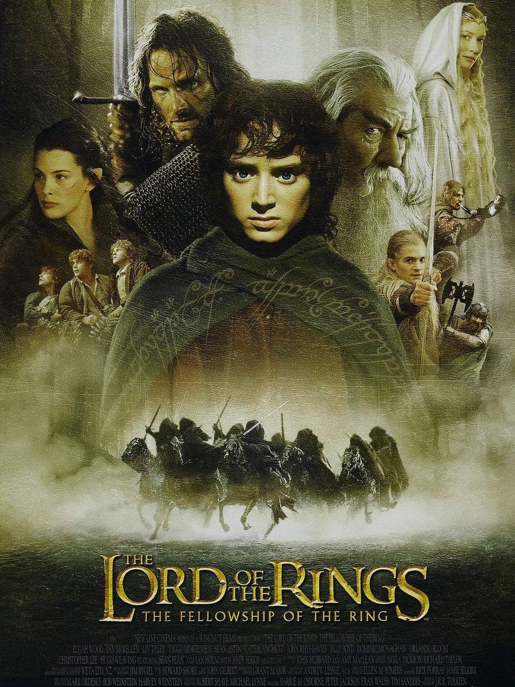
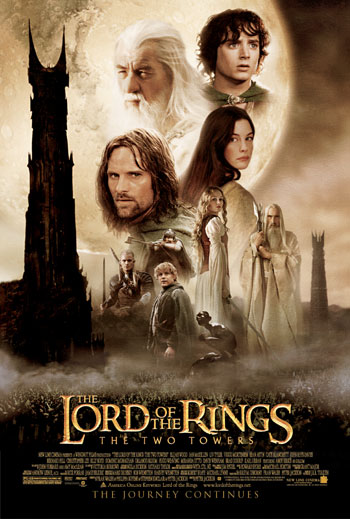

YESarac's Blog
The Lord of the Rings: The Fellowship of the Ring

The Lord of the Rings: The Fellowship of the Ring is a 2001 epic high fantasy adventure film directed by Peter Jackson from a
screenplay by Fran Walsh, Philippa Boyens, and Jackson, based on 1954's The Fellowship of the Ring, the first volume of the
novel The Lord of the Rings by J. R. R. Tolkien
Cast
- Sean Bean
- Elijah Wood
- Ian McKellen
- Sean Astin
- Viggo Mortensen
source
click to watch
The Lord of the Rings: The Two Towers

The Lord of the Rings: The Two Towers is a 2002 epic high fantasy adventure film directed by Peter Jackson
from a screenplay by Fran Walsh, Philippa Boyens, Stephen Sinclair, and Jackson, based on 1954's The Two Towers,
the second volume of the novel The Lord of the Rings by J. R. R. Tolkien.
Rewards
source
click to watch
The Lord of the Rings: The Return of the King

The Lord of the Rings: The Return of the King is a 2003 epic high fantasy adventure film directed by
Peter Jackson from a screenplay by Fran Walsh, Philippa Boyens, and Jackson. It is based on 1955's The Return of the King,
the third volume of the novel The Lord of the Rings by J. R. R. Tolkien. The sequel to 2002's The Lord of the Rings:
The Two Towers, the film is the third and final instalment in The Lord of the Rings trilogy.
Rewards
Golden Globe Awards
- Category: Best Motion Picture Drama Recipient: LOTR The Two Towers
- Category: Best Director Recipient: LOTR Peter Jackson
- Category: Best Original Score Recipient: Howard Shore
- Category: Best Original Song Annie Lennox, Fran Walsh and Howard Shore
source
click to watch